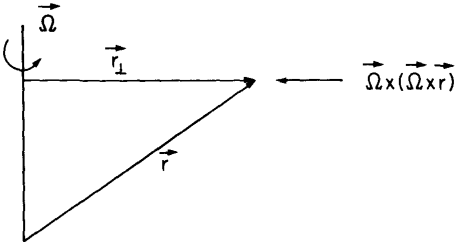

The discrepancy between the accelerations perceived in the different frames is equal to the three additional terms of \(\left( \frac{d\mathbf{u}_R}{dt} \right)_R + 2\boldsymbol{\Omega} \times \mathbf{u}_R + \boldsymbol{\Omega} \times (\boldsymbol{\Omega} \times \mathbf{r}) + \frac{d\boldsymbol{\Omega}}{dt} \times \mathbf{r}\)
\( \boldsymbol{\Omega} \) can be considered constant. The centripetal term can be rewritten
using \( \mathbf{r}_\perp \), the perpendicular distance from the rotation axis to the position
vector \( \mathbf{r} \)
\(\because
\boldsymbol{\Omega} \times \mathbf{r} = \boldsymbol{\Omega} \times \mathbf{r}_\perp
\)
\(\therefore\) Using the triple vector product identity
\(
\mathbf{A} \times (\mathbf{B} \times \mathbf{C}) = (\mathbf{A} \cdot \mathbf{C}) \mathbf{B} - (\mathbf{A} \cdot \mathbf{B}) \mathbf{C}
\Rightarrow \boldsymbol{\Omega} \times (\boldsymbol{\Omega} \times \mathbf{r}) = -|\boldsymbol{\Omega}|^2 \mathbf{r}_\perp
\)
1 Pedlosky, J. (1982). Geophysical Fluid Dynamics. Springer study edition. Springer, Berlin, Heidelberg.